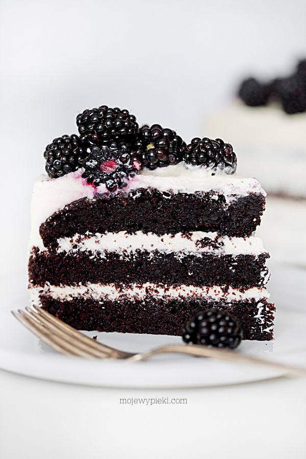

Pyszne ciasto z jezynami

Składniki na ciasto:

- 1 i 3/4 szklanki mąki pszennej
- 1,5 szklanki drobnego cukru do wypieków
- 3/4 szklanki kakao
- 1,5 łyżeczki sody oczyszczonej
- 1,5 łyżeczki proszku do pieczenia
- pół łyżeczki soli
- 1 szklanka maślanki lub kefiru
- 1/2 szklanki (125 ml) oleju rzepakowego lub słonecznikowego
- 2 duże jajka
- 1 łyżeczka ekstraktu z wanilii
- 1 szklanka świeżo zaparzonej gorącej kawy (bez fusów)
Przepis na ciasto:
- Do dużego naczynia przesiać mąkę, kakao, sodę, proszek, sól.
- Do większej miski wlać maślankę, olej, jajka, wanilię, dodać cukier.
Roztrzepać rózgą kuchenną tylko do wymieszania się składników
(nie ubijać, najlepiej też nie używać miksera). - Dodać suche składniki i wymieszać szpatułką, tylko do połączenia się składników.
Powoli dodawać gorącą kawę, mieszając dalej szpatułką. - Gotową masę przelać do tortownicy średnicy 23 cm, wyłożonej papierem do pieczenia.
Piec w temperaturze 170ºC, bez termoobiegu, przez około 40 – 45 minut
lub do tzw. suchego patyczka. Wyjąć, wystudzić, ściąć górkę (nie będzie potrzebna)
i przekroić na 3 blaty.

Skladniki na masę kremową:
- 420 g serka philadelphia, w temperaturze pokojowej
- 140 g masła, w temperaturze pokojowej
- 1 szklanka cukru pudru, przesianego
- 1 łyżeczka ekstraktu lub pasty z wanilii
- świeże jeżyny
- Masło, cukier i wanilię umieścić w misie miksera.
Utrzeć do otrzymania puszystej i jasnej masy maślanej. Dodawać serek kremowy,
w trzech turach, cały czas ucierając.
Wykonanie:
Blaty ciasta przełożyć kremem zostawiając krem na boki i wierzch tortu. Na górze ułożyć świeże jeżyny. Schłodzić w lodówce.